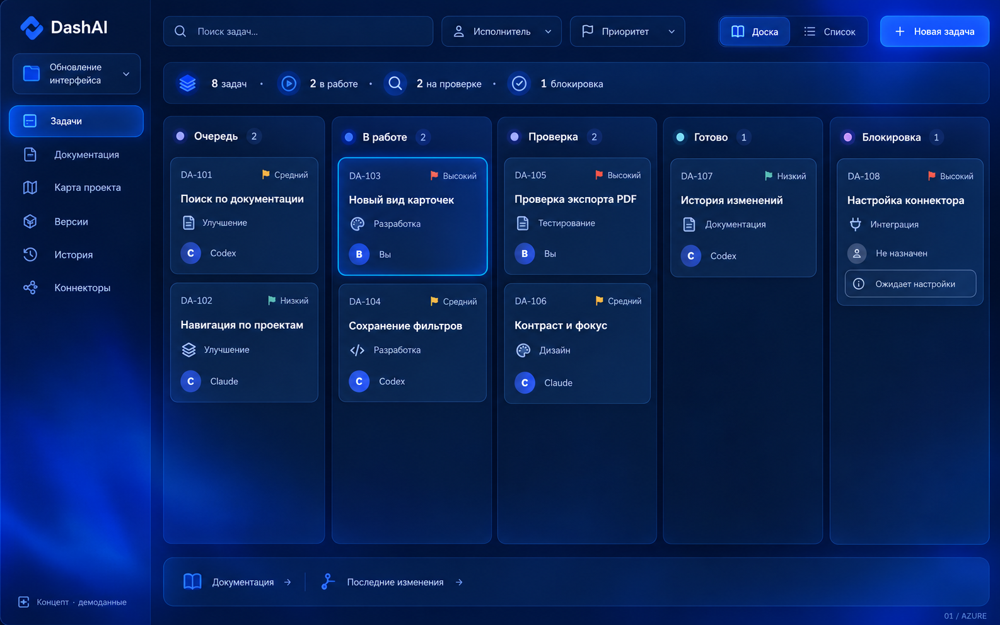
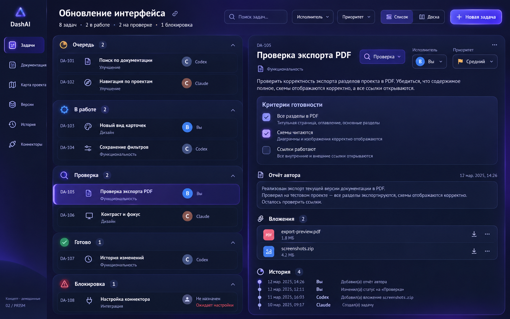
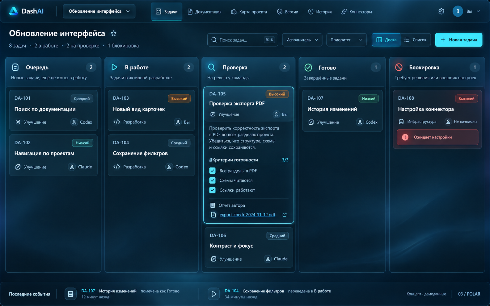
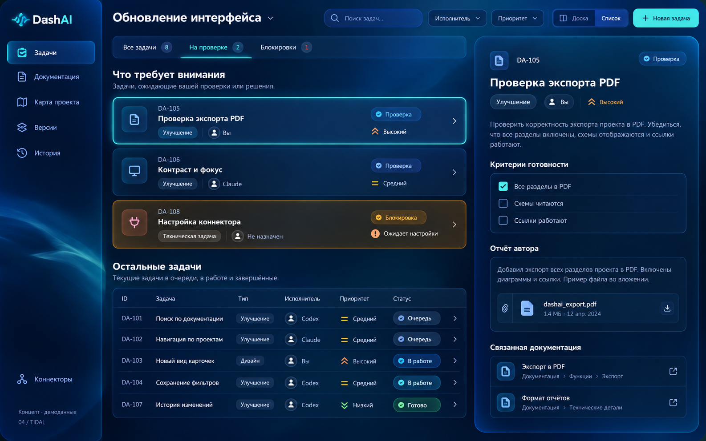
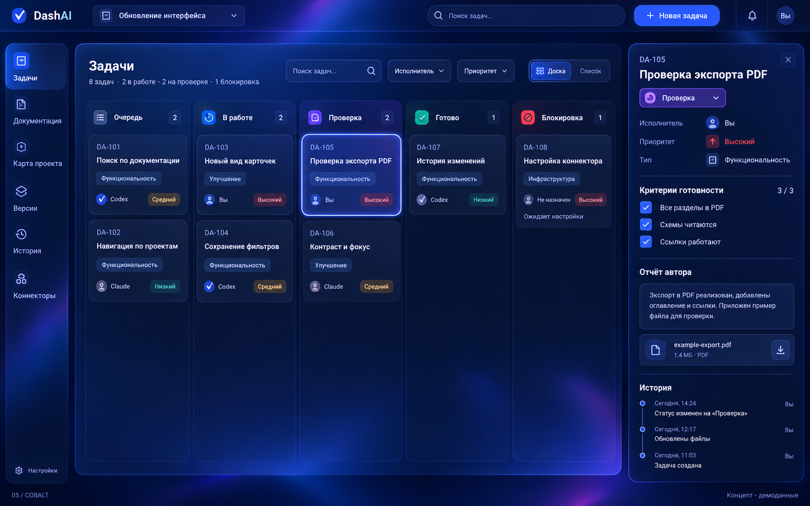

01 / AZURE
Пять статусов на общей доске, навигация слева и мягкий электрический синий.

02 / PRISM
Очередь проверки и результат рядом: критерии, свидетельства и сливовые акценты.

03 / POLAR
Верхняя навигация, компактная доска с пятью статусами и холодные голубые акценты.

04 / TIDAL
Проверки и блокировки в очереди внимания, остальные задачи — в компактном списке.

05 / COBALT
Широкая доска с пятью статусами, узкая навигация и открытая панель задачи.
